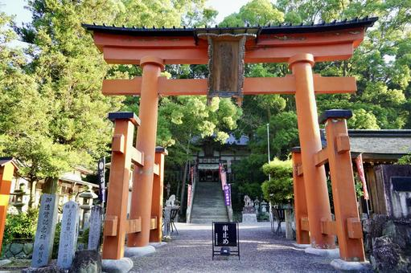

- TOKYO
- El centro de los grandes negocios te sorprende con rincones de encanto retro,
inmensos jardines y el mercado de pescado más activo del mundo.
- Alrededor de la estación Tokyo y el Palacio Imperial, el centro de la ciudad ha sido
siempre la sede del poder político y económico. Goza de una atmósfera de confianza y elegancia,
desde las calles de elegantes tiendas de Ginza al histórico distrito geisha de Kagurazaka.
Referencia a https://www.gotokyo.org/es/destinations/central-tokyo/index.html
- OSAKA
- Osaka es una ciudad relajada y llena de encanto, famosa por su gastronomía,
ocio y vida nocturna, pero en la que también tienen cabida la historia y la cultura.
Osaka está cerca de Tokio en tren bala, pero tiene una personalidad muy diferente a la
de la capital japonesa. Bájate del tren bala y descubre una zona con una animada vida
nocturna, una gastronomía deliciosa y habitantes simpáticos y abiertos.
Además de un montón de tiendas y atracciones modernas, en Osaka también hay lugares de
interés histórico, entre los que destaca el Castillo de Osaka, donde conocerás la
historia japonesa y podrás pasear por sus jardines, especialmente hermosos durante la
época de floración de los cerezos en abril.
Referencia a https://www.japan.travel/es/destinations/kansai/osaka/
- KYOTO
- Explora la rica historia y las tradiciones culturales de Japón en el corazón de Kioto.
- Kioto fue la capital de Japón y la residencia del emperador durante más de 1000 años.
En la actualidad, alberga algunas de las atracciones más populares del país.
Muchas de ellas, como Kyoto Gosho y el Castillo Nijo , se encuentran en el corazón de
la ciudad. Puedes pasar varias horas explorando el centro de Kioto y ver algunos de
los monumentos más emblemáticos de Japón.
- Sobre nosotros
- Política de privacidad
- Condiciones de reserva
- Sobre nosotros
- Contacto